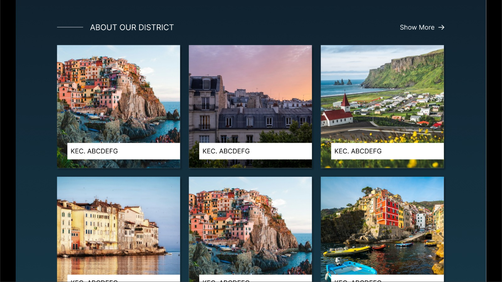
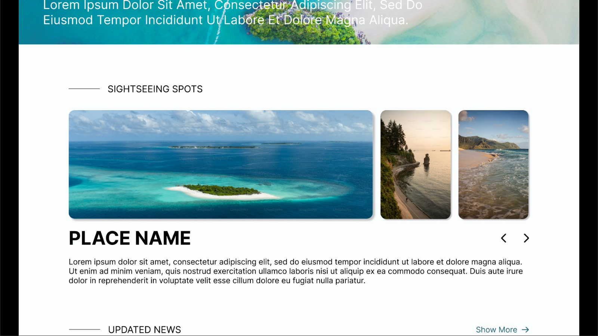
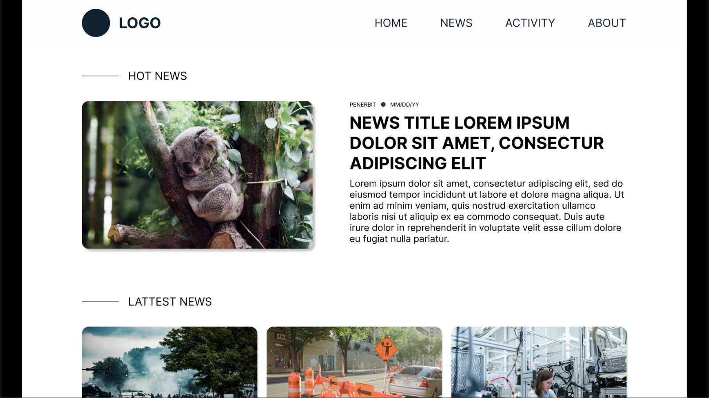
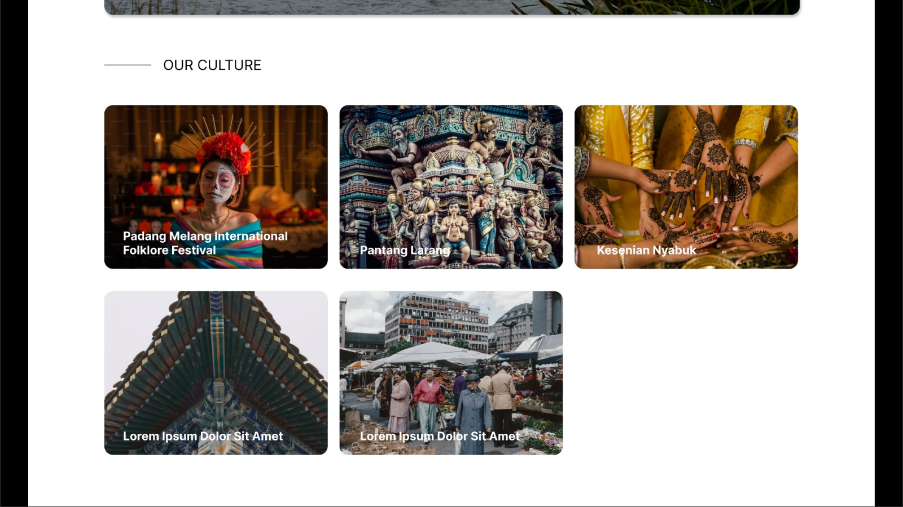
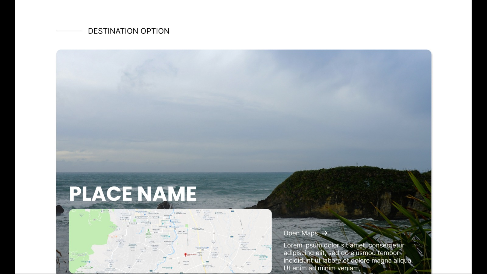
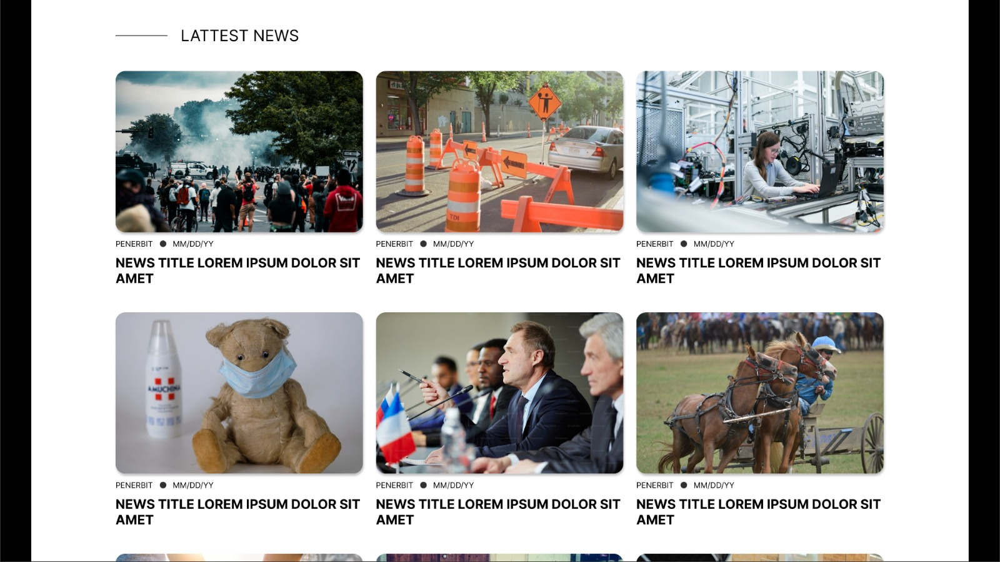
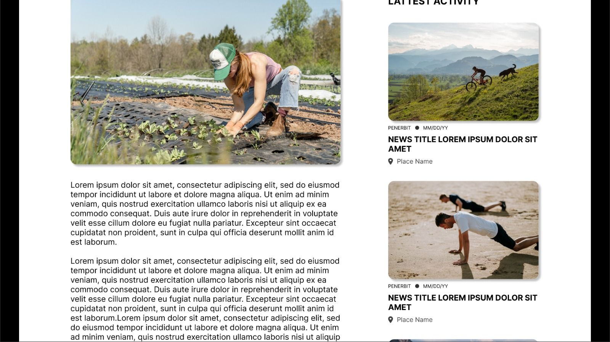
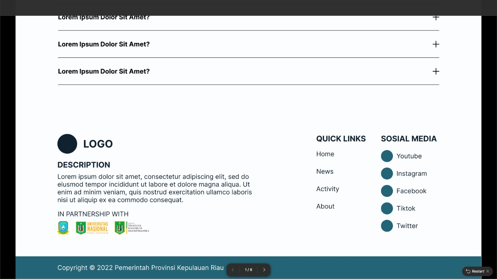

Website Pariwisata Anambas
Platform pariwisata yang dinamis dan informatif untuk mempromosikan keindahan Kepulauan Anambas, dibangun menggunakan Next.js.
Deskripsi Proyek
Sebagai Front-End Developer dalam tim, saya berkontribusi dalam pengembangan platform digital untuk mempromosikan pariwisata di Kepulauan Anambas. Proyek ini dirancang untuk memberikan pengalaman pengguna yang kaya akan informasi visual dan tekstual mengenai destinasi, budaya, dan aktivitas wisata.
Tanggung jawab utama saya adalah menerjemahkan desain UI/UX menjadi komponen-komponen interaktif dan reusable menggunakan Next.js dan Tailwind CSS. Saya membangun berbagai fitur, mulai dari halaman autentikasi pengguna, display informasi dinamis untuk destinasi dan berita, hingga memastikan tata letak yang responsif di berbagai perangkat.
Tantangan & Solusi
Tantangan terbesar adalah merancang arsitektur front-end yang fleksibel untuk menampilkan beragam jenis konten pariwisata secara dinamis. Saya mengatasinya dengan menerapkan prinsip-prinsip desain atomik untuk komponen UI, yang memungkinkan konsistensi dan kemudahan dalam pengembangan. Untuk manajemen state pada sisi klien, kami menggunakan Zustand yang ringan dan efisien, memastikan performa website tetap cepat saat memuat data.
Teknologi Utama
Tautan
Lihat Kode di GitHub →Galeri Fitur

Halaman Utama (Hero Section)
Tampilan utama yang menyambut pengunjung dengan visual yang menarik dan navigasi yang jelas.

Jelajahi Kecamatan
Bagian yang menampilkan informasi mengenai berbagai kecamatan sebagai gerbang destinasi wisata.

Pilihan Aktivitas Wisata
Menampilkan beragam kegiatan wisata menarik yang dapat dipilih oleh turis saat berkunjung.

Berita & Informasi Terkini
Bagian dinamis untuk menampilkan artikel dan berita terbaru seputar pariwisata Anambas.

Halaman Detail Budaya
Tampilan mendalam yang menjelaskan salah satu aspek budaya atau kesenian khas Anambas.

Halaman Detail Destinasi
Menyajikan informasi lengkap mengenai salah satu destinasi wisata unggulan.

Halaman Detail Berita
Tampilan untuk membaca artikel berita secara lengkap dengan gambar pendukung.

Pilihan Akomodasi
Menampilkan daftar penginapan atau hotel yang tersedia bagi para wisatawan.

Footer Informasi
Bagian akhir halaman yang memuat informasi kontak dan tautan cepat.